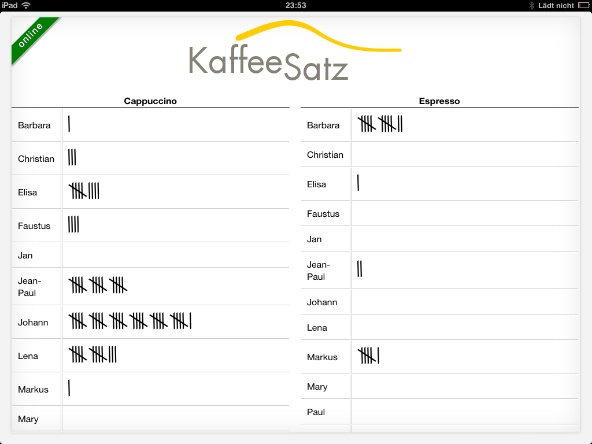

Kaffeesatz

Kaffeesatz - Eine Kaffeeliste mit Stil
Ein weiteres Spaßprojekt für alle, die Kaffeestrichlisten (oder jede andere Art von Strichliste) führen und verwalten. Erspart den Kontakt mit Zetteln, Stiften und Kopfrechnen.
Der Server
Ein Nodejs-Server mit MongoDB bildet das Rückrad der Anwendung. Der Server stellt eine (HTTP-)REST-API zur Verfügung und spaßeshalber zusätzlich eine Websocket-API. Er liefert auch die Kaffeeliste und die Administrationsoberfläche aus und verwaltet Zugriffsrechte.
Die App
Eine mobile App mit der sich Striche tatschen statt malen lassen. Aktualisiert sich selbst und ist installierbar auf iOS und Firefox.
Die Administration
Eine einfach zu bedienende Oberfläche erlaubt jederzeitiges Abrechnen, Verwalten von Nutzern und Getränken sowie clevere nachträgliche Preissteigerungen.